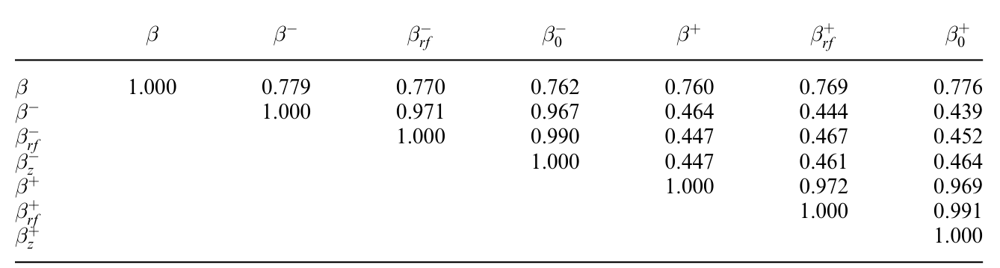
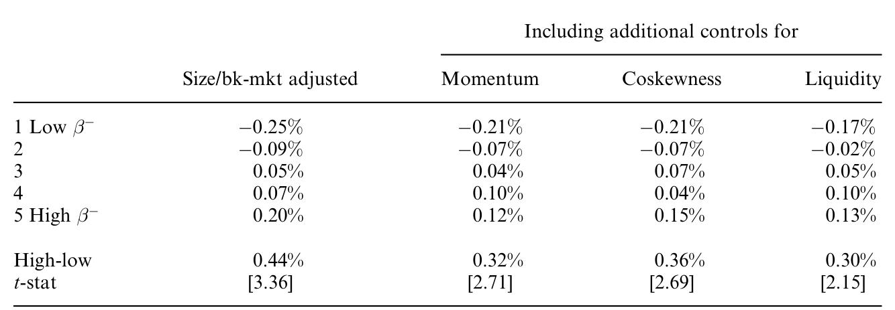
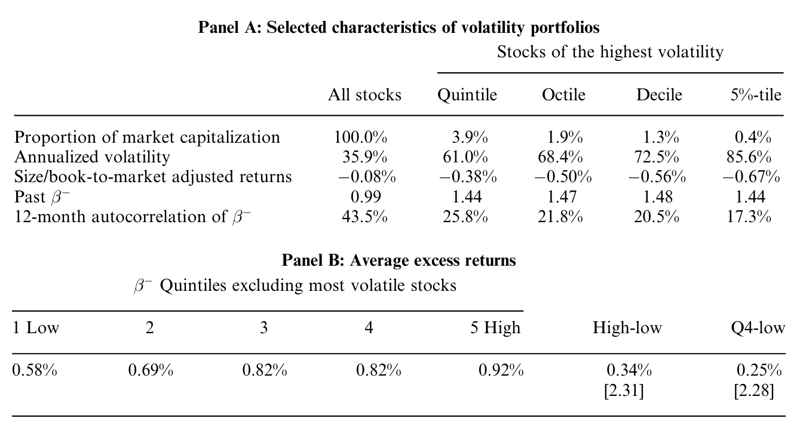
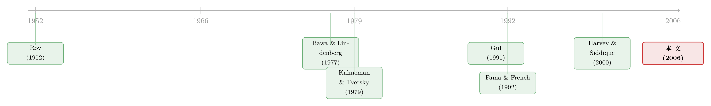

跌的时候才显形：被 CAPM 漏掉的那半个 beta
本文读的是 Ang, Chen & Xing (2006, Review of Financial Studies)：把市场下跌时的那部分 beta 单独拎出来，叫做 下行 beta（downside beta, \(\beta^-\)）。横截面上，下行 beta 高的股票平均收益显著更高——这份「下行风险溢价」大约 6% 每年，而它既不是普通市场 beta 的化妆品，也不是共偏度（coskewness）、流动性风险、规模、价值或动量的影子。
1 一个我们其实早就知道、却一直没好好量过的常识
先讲一件直觉上谁都同意、可放进模型里却被悄悄抹平的事。
假如有这么一只股票：市场涨的时候它跟着涨，幅度一般；可一旦市场下跌，它跌得格外狠——跌得比涨得更同步、更猛。你愿意持有它吗？大概率不愿意。因为它偏偏在所有人都缺钱、财富都缩水的那些日子里，给你最难看的回报。换句话说，它在你「最需要钱」的时刻掉链子。
这不是什么新鲜的观察。早在 Roy (1952) 提出「安全第一（safety first）」原则、Markowitz (1959) 主张用 半方差（semivariance） 而非方差来度量风险时，经济学家就已经承认：投资者对 下行损失（downside loss） 和 上行收益（upside gain） 的在意程度，根本就不对称。后来 Kahneman and Tversky (1979) 的 损失厌恶（loss aversion）、Gul (1991) 的 失望厌恶（disappointment aversion, DA），都是在用不同的数学语言反复讲同一句话：人怕跌，远甚于人爱涨。
可是，等我们走到资本资产定价模型（Capital Asset Pricing Model, CAPM）这一步，这份不对称却被一刀切平了。CAPM 里，一只股票的预期超额收益正比于它的市场 beta，而这个 beta 在牛市和熊市里被假设成同一个常数。涨也好跌也好，风险就那么一个数。
于是一个自然的问题浮出水面：如果投资者真的更怕跌，那市场是不是应该专门为「跌的时候才暴露出来的那部分 beta」付一笔额外的钱？
这正是本文要做的事。它把 beta 按市场涨跌劈成两半，证明其中「跌的那一半」——下行 beta——被横截面定了价，而且价格不便宜。
2 一个最小的模型：当代表性投资者「怕跌」
本文先用一个极简的均衡模型说明：下行风险溢价可以在一个完全理性的代表性投资者框架里内生地长出来，不需要行为偏误、也不需要做空约束这类一边倒的摩擦。它用的就是 Gul (1991) 的失望厌恶效用。
这里要强调一句：作者特意不走「损失厌恶 + 心理账户」（如 Barberis and Huang (2001)）那条行为路线，也不走「做空约束」（Chen, Hong and Stein (2001)）那条摩擦路线。理由很实在——失望厌恶效用是全局凹的，投资组合问题有解；而损失厌恶效用下，最优有限组合可能根本不存在 [Ang, Bekaert and Liu (2005)]。
2.1 失望厌恶效用长什么样
Gul (1991) 的失望厌恶效用由下面这个隐式方程定义（注意是隐式：确定性等价 \(\mu_W\) 同时出现在等号两边）：
$$ U(\mu_W) = \frac{1}{K}\left[\int_{-\infty}^{\mu_W} U(W)\,dF(W) \;+\; A\int_{\mu_W}^{\infty} U(W)\,dF(W)\right] $$
其中 \(U(W)\) 是对期末财富 \(W\) 的 felicity 函数，作者取幂效用 \(U(W) = W^{1-\gamma}/(1-\gamma)\)；\(F(\cdot)\) 是财富的累积分布；\(\mu_W\) 是确定性等价；归一化常数 \(K\) 为
$$ K = \Pr(W \le \mu_W) + A\,\Pr(W > \mu_W). $$
关键在那个参数 \(0 < A \le 1\)，叫 失望厌恶系数。落在确定性等价 \(\mu_W\) 之上的结果被称作「振奋的（elating）」，之下的称作「失望的（disappointing）」。当 \(A < 1\) 时，效用函数给振奋结果的权重被压低、给失望结果的权重相对抬高——这正是「怕跌」的数学化。而当 \(A = 1\)，失望厌恶就退化成标准的 CRRA 效用，约等于均值-方差偏好，不对称随之消失。
直觉上，这个 \(A\) 就是在确定性等价那一点上，给效用函数砍了一个 kink（折点）：跌破 \(\mu_W\) 的那一侧斜率更陡。投资者对跨过这条线往下走的财富变化反应格外剧烈。
2.2 两个资产、六个状态的玩具经济
为了把效果讲清楚，作者构造了一个最小的横截面：两个资产 \(x\) 和 \(y\)。\(x\) 有三种可能支付 \(u_x, m_x, d_x\)，\(y\) 有两种 \(u_y, d_y\)（都是相对无风险支付的超额量）。之所以让 \(x\) 有三个状态，是为了能装下「高阶矩」——尤其是偏度。市场组合就由 \(x\) 和 \(y\) 构成。
代表性投资者解的是
$$ \max_{w_x, w_y} U(\mu_W), \qquad W = R_f + w_x x + w_y y, $$
均衡要求他正好持有市场组合（\(w_x + w_y = 1\)，且权重都在 \(0\) 和 \(1\) 之间）。
这里有个微妙的技术点值得一提：解这个问题远比 CRRA 难。因为 \(\mu_W\) 既是被优化的目标、又出现在约束里，必须同时求解确定性等价和组合权重。作者扩展了 Ang, Bekaert and Liu (2005) 的算法到多资产。更要命的是，对某些参数，均衡可能压根不存在——在低 \(A\) 下，不参与（nonparticipation）反而是最优的。这跟 CRRA 世界完全不同：CRRA 下只要风险溢价为正，投资者总会持有风险资产。
2.3 模型给出的核心结论：β 不再是充分统计量
校准的结果一句话总结：在这个经济里，普通市场 beta（记作 \(\beta\)）不再是描述风险-收益关系的充分统计量。 预期收益确实随 \(\beta\) 上升，但 \(\beta\) 没能装下全部风险——因为代表性投资者通过 \(A < 1\) 特别在意下行。于是，刻画下行风险的指标就有了额外的解释力。
本文采用 Bawa and Lindenberg (1977) 提出的 下行 beta，这也是全文的灵魂方程。它只在「市场超额收益低于其均值」这个下行事件上度量协动：
这里 \(r_i\) 是个股超额收益，\(r_m\) 是市场超额收益，\(\mu_m\) 是市场平均超额收益。与之对称地，作者还定义了只在市场上涨时度量的 上行 beta：
$$ \beta^+ = \frac{\text{cov}(r_i, r_m \mid r_m > \mu_m)}{\text{var}(r_m \mid r_m > \mu_m)}. $$
为了把下行 beta 和普通 beta 真正分开，作者再造了一个 相对下行 beta，即 \((\beta^- - \beta)\)；同理还有相对上行 beta \((\beta^+ - \beta)\)，以及两者之差 \((\beta^+ - \beta^-)\)。
模型校准（论文 Figure 1）画出了一组干净的关系：把 CAPM alpha 定义为不被普通 beta 解释的那部分超额收益，\(\alpha = E(r_i) - \beta\,E(r_m)\)，结果发现 CAPM alpha 随下行 beta 单调上升、随相对下行 beta \((\beta^- - \beta)\) 上升。也就是说，更高的下行风险，被 CAPM 之外的更高预期收益所补偿。反过来，控制住普通 beta 或下行 beta 后，更高的上行潜力反而对应更低的预期收益——一只在市场上涨时跟得特别紧的股票，因为它在你财富已经很高的时候才发力，所以不那么珍贵，投资者愿意打个折持有它。
2.4 下行 beta 和共偏度，是不是一回事？
这是全文最要紧的一个区分，也是后面实证里反复在防的「冒名顶替者」。
Rubinstein (1973)、Kraus and Litzenberger (1976)、Harvey and Siddique (2000) 这一脉讲的是：投资者厌恶负的 共偏度，所以低共偏度的股票该有高收益。共偏度的定义是
$$ \text{coskew} = \frac{E[(r_i - \mu_i)(r_m - \mu_m)^2]}{\sqrt{\text{var}(r_i)}\,\text{var}(r_m)}, $$
它可以从一般欧拉方程 \(E_t\!\left[\frac{U'(W_{t+1})}{U'(W_t)} r_{i,t+1}\right] = 0\) 出发，对 \(U'\) 做三阶泰勒展开 \(U' = 1 + W U'' r_m + \tfrac{1}{2} W^2 U''' r_m^2 + \cdots\) 得到。
那两者的差别在哪？下行 beta 是直接、非线性地条件在「市场跌破均值」这个事件上的；而共偏度是一个无条件的中心矩，它并不显式地强调上、下行市场之间的不对称。 更尖锐的是：失望厌恶效用在确定性等价处有一个 kink，是不光滑的；用多项式（泰勒展开）去逼近一个带折点的函数，当折点很大（\(A\) 很小）时可能根本不是好的全局近似 [Bansal, Hsieh and Viswanathan (1993)]。所以共偏度顶多捕捉到下行协动的一部分，却不是同一个东西。正因如此，作者在实证里格外小心地控制共偏度，要看挤掉它之后，下行 beta 还剩多少。
（关于「市场跌的时候大家才一起跳水」这种不对称协动，这两位作者另有一篇专门的统计研究，见《涨时各走各的，跌时一起跳水：给「不对称」一把无关模型的尺子》。）
3 识别策略：为什么要用「一年期、日频」这把尺子
模型给了动机，但真正决定这篇论文成色的，是它的实证设计。这里有一个看似技术、实则关键的选择。
经典的 Fama and MacBeth (1973)、Fama and French (1992) 检验，做法是先按预排序（preformation）的 beta 把股票分组、再用全样本算后排序（postformation）的因子载荷，然后看这些载荷和平均收益的横截面关系。Fama and French (1992) 那篇著名的「beta 已死」，用的正是这套：长样本、月频、先分组后估载荷——结论是后排序市场 beta 和平均收益之间找不到关系。
本文反其道而行之。它的逻辑链条是这样的：
首先，作者强调自己关心的是 同期（contemporaneous）关系——在同一段时间窗口里，直接用实现的因子载荷给股票排序，再算这些组合在同一段时间里的实现平均收益。这是从 Black, Jensen and Scholes (1972) 以来横截面风险-收益检验的根基：协动强的股票，在它强协动的那段时间里，平均收益就该高。
接着，一个自然的问题是：预排序载荷里混着「真实的载荷变化」和「测量误差」两种东西，会把信号洗淡。而本文直接对实现载荷排序，后排序的因子离散度几乎只来自股票收益与风险因子的真实协动——测量误差的污染小得多。
然后，是那把更细的尺子：作者用短到一年的样本窗口、日频数据来估 beta，而不是用长样本、月频。为什么？因为如果 beta 是时变的，长样本会把不同时期的 beta 揉成一团糊。短窗口 + 高频，给了在「beta 会动」的世界里更高的统计功效——这一点 Lewellen and Nagel (2005)、Ang and Chen (2005) 都有呼应。
（beta 会随状态漂移、用错尺子就会被低估，这条线索本身就够写一篇，见《时变的 beta，被低估了二十年的风险》；以及《波动率之谜，藏在 beta 异象的「时机」里》。）
但真正关键的一步在于：光证明「下行 beta 高、同期收益就高」还不够，因为 \(\beta\)、\(\beta^-\)、\(\beta^+\) 三者天生高度相关。作者必须证明，这份溢价不是普通 beta 的换装，也不是共偏度、流动性风险、规模、价值、动量这些已知效应的影子。于是进入第二阶段：用 Fama-MacBeth (1973) 横截面回归，把上面这一长串控制变量一并塞进去，看下行 beta 的系数还站不站得住。
4 数据与主要结果
数据：全部 NYSE/AMEX/NASDAQ 个股，日频收益用来在一年窗口内估计各类 beta，配合规模、账面市值比、动量等特征及因子载荷（Fama and French (1993)、Pástor and Stambaugh (2003)、Jegadeesh and Titman (1993)）。观测单元是「个股 × 月」，跨越美股长样本期。
4.1 下行 beta 被定价，溢价约 6%
第一组结果落在投资组合层面：按下行 beta（以及相对下行 beta \(\beta^- - \beta\)）排序，平均实现收益单调递增。也就是说，在市场下跌时与市场强协动的股票，在同期确实拿到了更高的平均收益。
第二组、也是更硬的结果来自 Fama-MacBeth 回归。在同时控制普通 beta、共偏度、规模与账面市值比的特征及载荷、流动性风险载荷、过去收益（动量）之后，下行风险的横截面溢价仍约为 6% 每年。这个量级不小——它和股权溢价本身是同一个数量级。

Table 4: also shows that the regular measure of beta is quite different
值得专门点出的是：回归显示，普通市场 beta 的度量本身与下行 beta 相当不同，二者并非一回事。这恰好坐实了模型的预言——\(\beta\) 不是充分统计量，下行那一半带着独立的定价信息。
4.2 连 Fama-French 组合都「藏」着下行风险
作者还做了一个漂亮的延伸（论文 Section 2.5）：去检查最常用的、按规模和账面市值比排序的 Fama-French (1993) 组合，看它们是不是也暴露在下行风险上。
结果是肯定的——规模和账面市值比上的收益价差，本身就伴随着下行 beta 的系统性差异。换句话说，我们熟悉的「小盘溢价」「价值溢价」里，有一部分其实可以用下行风险来重新讲一遍。

Table 10: clearly shows that the spreads in size and book-to-market
5 反转：过去的下行 beta，能预测未来吗？
到这里，故事还差最后一块拼图，于是反转出现。
前面所有结果都是同期的：风险载荷和收益在同一段时间里度量。这是横截面定价检验的标准做法，但聪明的读者一定会追问：那过去的下行 beta，能不能预测未来的收益？毕竟，一个风险因子如果连一个月的持续性都没有，它的实践意义就大打折扣。
答案是「大体能，但有一个例外」。
作者发现：对横截面里的绝大多数股票，高的过去下行 beta 确实预测了未来一个月的高收益，和同期关系一致。但是，这条关系在波动率极高的那一小撮股票上崩掉了。
为什么崩？作者归因于两件事。第一，极高波动股票的未来下行协动本身就难以用过去的 beta 预测——这些股票一年期 beta 的平均一年期自相关只有 17.3%，而典型股票是 43.5%。高波动放大了测量误差，过去的 beta 成了未来 beta 的糟糕预报员。第二，极高波动的股票本身就有反常的低收益 [Ang, Hodrick, Xing and Zhang (2006)]，这股力量会把预测关系往反方向拽。

Table 9: shows that past poorly predicts future only for high
好消息是，这个「失灵区」很小：过去下行 beta 无法预测未来收益的那部分，按市值算不到 4%。对绝大多数市场，下行 beta 作为可交易、可预测的风险载荷是站得住的。
最后，作者顺手厘清了和共偏度的关系：确认了 Harvey and Siddique (2000) 的发现——过去的共偏度确实能预测未来收益，但它的预测力并非来自「共偏度捕捉了未来的下行风险暴露」。也就是说，过去下行 beta 和过去共偏度，是两个不同的风险载荷，各自带着各自的信息。这一刀切得干净，也是全文反复要立的论点。
6 文献脉络
把这条线索捋一遍，会发现它其实是一条「常识被模型抹平、又被实证找回来」的回归之路。
最早，Roy (1952) 的安全第一、Markowitz (1959) 的半方差，已经把「人更怕跌」写进了风险度量。理论上，Bawa and Lindenberg (1977) 在均值-下偏矩（mean-lower partial moment）框架里给出了下行 beta 的定义——本文的灵魂方程正是从这里借来的。偏好侧，Kahneman and Tversky (1979) 的前景理论、Gul (1991) 的失望厌恶，把不对称从「度量」推进到了「效用」。
但实证这边长期交了白卷。Jahankhani (1976) 没能让下行 beta 跑赢传统 CAPM——可他用的是按普通 beta 分组的组合；Harlow and Rao (1989) 只在最大似然框架里相对 CAPM 评估下行风险。早期作者们都没有直接在全体个股的横截面上去证明「跌时协动更强的资产平均收益更高」。与此并行的另一支，是 Kraus and Litzenberger (1976)、Harvey and Siddique (2000) 的共偏度定价——它和下行风险像，却不是同一回事。

本文的位置，就在这两支的交汇处：它接过 Bawa-Lindenberg 的下行 beta、Gul 的失望厌恶动机，用 Fama-MacBeth (1973) 的横截面方法 + 一年期日频这把更细的尺子，第一次干净地把下行风险溢价从普通 beta 和共偏度里剥离出来，量到了约 6%。
（这条「把 beta 拆开、给条件风险定价」的脉络，后来在多处生根，比如把第三颗「会怕波动」的心装进 CAPM 的《市场之外，长期投资者还在怕什么？》，以及把崩盘风险拉到多元因子里的《因子动物园之外，那种没人定价的「一起崩」》。）
7 评论与延伸（Q&A + 研究方向）
(a) 几个可能的疑问
Q：下行 beta 和共偏度，凭什么说不是一回事？
关键在「条件 vs. 无条件」。下行 beta 是显式地、非线性地条件在「市场跌破均值」这一事件上度量协动；共偏度是一个无条件中心矩，并不专门强调上下行的不对称。更要命的是失望厌恶效用在确定性等价处有 kink、不光滑，用泰勒展开（共偏度的来源）去逼近它在折点大时会失真。实证上，控制住共偏度后下行 beta 仍有约 6% 的溢价，反过来共偏度的预测力也不来自它对未来下行风险的捕捉——两者各自独立。
Q：6% 的溢价是「同期」算出来的，会不会只是机械的会计关系，而非真风险？
这是最该警惕的点。同期关系（实现载荷对实现收益）本就是横截面定价检验的标准做法，从 Black-Jensen-Scholes 到 Lettau-Ludvigson 都这么干。本文的辩护有两层：一是它额外证明了过去的下行 beta 能预测未来收益（除极高波动股外），把纯机械解释挡掉了一部分；二是它控制了一长串已知效应后溢价依然存在。但要说完全排除「这是某种未被建模的特征的同期投影」，仍需更多结构化证据。
Q：为什么偏要用一年期、日频，而不是经典的长样本月频？
因为 beta 时变。长样本会把不同状态下的 beta 揉成一个平均数，正是这一点让 Fama-French (1992) 找不到 beta 溢价。短窗口高频能更贴近「此刻的」载荷，在时变环境下功效更高。代价是测量误差更大——这也正是为什么预测关系在高波动股上会崩。
Q：那条在极高波动股上「失灵」的预测关系，是不是暴露了模型的软肋？
与其说是软肋，不如说是诚实。失灵来自两股力：高波动放大了 beta 的测量误差（一年期 beta 自相关只有 17.3% vs 典型 43.5%），以及高波动股本身的反常低收益（特质波动率之谜）。好在这块「失灵区」按市值不到 4%，对主体结论无伤。但它确实提醒我们，下行 beta 的可交易性依赖于它的可预测性，而后者在尾部并不稳。
Q：这份下行风险溢价，是不是其实就是流动性风险换了个名字？
作者专门控制了 Pástor and Stambaugh (2003) 的流动性风险载荷，溢价依然在。所以至少在这个度量下，下行风险不是流动性风险的影子。但「下跌时协动强」和「下跌时流动性枯竭」在数据上高度纠缠，二者的边界仍是开放问题——尤其在债券这类流动性更脆弱的市场里。
Q：模型里说「均衡可能不存在」，这是 bug 还是 feature？
是 feature，而且很有意思。在低失望厌恶系数 \(A\) 下，不参与可能是最优的，于是均衡不存在。这跟 CRRA 世界（只要溢价为正就总持有风险资产）形成鲜明对比，恰恰说明 kink 偏好会内生地产生「退出市场」的极端行为——这本身就是一个值得单独研究的有限参与机制。
(b) 几个可能的研究问题与提案
1. 公司债里的下行 beta
【经济故事】公司债的收益分布天生左偏——上行被票息封顶，下行敞着违约的口子。失望厌恶投资者对「市场跌时一起跌」的债券应当索要更高利差。把下行 beta 搬到信用市场，理论上比股票更对味。 【可行性】中。数据可用 TRACE 日频成交 + 市场/信用因子，但债券交易稀疏、价格离散，估一年期日频 beta 会有严重的非同步交易问题，需要 Scholes-Williams (1977) 式的修正。识别上还要把下行 beta 和已知的债券流动性溢价分开，难度不小但 doable。
2. 外资持有人是否抬高了下行 beta 的定价？
【经济故事】如果失望厌恶是溢价之源，那么投资者结构应当影响溢价大小。外资持有人在母国市场下跌时更可能「资本外逃」式抛售，从而放大标的的下行协动。一个可检验的预测：外资持股高的股票，下行 beta 溢价更陡。 【可行性】中。需要跨国个股层面的外资持股数据（如 FactSet/EPFR）匹配各国市场下行 beta。识别可借「可投资度（investability）」放开之类的准自然实验，但要小心外资持股本身的内生性。
3. 危机时段下行 beta 的「失灵区」会扩大吗？
【经济故事】本文发现极高波动股上预测失灵、且这块只占市值不到 4%。但在系统性危机里，高波动股的占比会暴涨，失灵区可能急剧扩大，意味着下行风险因子在最需要它的时候反而最不可交易。 【可行性】高。纯用现成的 CRSP 日频数据，按时间切片重做预测回归，看失灵区市值占比随 VIX 或市场波动状态怎么变。识别简单、数据齐全，是个低成本高产出的方向。
4. 把下行 beta 和特质波动率之谜彻底分开
【经济故事】预测失灵的第二个来源，是高波动股的反常低收益（Ang, Hodrick, Xing and Zhang (2006)）。那么下行 beta 溢价里，有多少其实是特质波动率之谜在借壳？把两者做一次彻底的横截面正交化，能厘清谁才是真因子。 【可行性】高。同一套 CRSP + Fama-French 数据，双重排序或带交互项的 Fama-MacBeth 即可。识别清晰，难点只在如何令人信服地区分两个高度相关的载荷。
8 参考文献
- Ang, A., G. Bekaert, and J. Liu (2005). Why Stocks May Disappoint. Journal of Financial Economics 76, 471–508.
- Ang, A., and J. Chen (2002). Asymmetric Correlations of Equity Portfolios. Journal of Financial Economics 63, 443–494.
- Ang, A., R. J. Hodrick, Y. Xing, and X. Zhang (2006). The Cross-Section of Volatility and Expected Returns. Journal of Finance 51, 259–299.
- Bawa, V. S., and E. B. Lindenberg (1977). Capital Market Equilibrium in a Mean-Lower Partial Moment Framework. Journal of Financial Economics 5, 189–200.
- Black, F., M. Jensen, and M. Scholes (1972). The Capital Asset Pricing Model: Some Empirical Tests. In M. Jensen (ed.), Studies in the Theory of Capital Markets. Praeger, New York.
- Fama, E. F., and K. R. French (1992). The Cross-Section of Expected Stock Returns. Journal of Finance 47, 427–465.
- Fama, E. F., and K. R. French (1993). Common Risk Factors in the Returns on Stocks and Bonds. Journal of Financial Economics 33, 3–56.
- Fama, E. F., and J. D. MacBeth (1973). Risk, Return, and Equilibrium: Empirical Tests. Journal of Political Economy 71, 607–636.
- Gul, F. (1991). A Theory of Disappointment Aversion. Econometrica 59, 667–686.
- Harlow, W., and R. Rao (1989). Asset Pricing in a Generalized Mean-Lower Partial Moment Framework: Theory and Evidence. Journal of Financial and Quantitative Analysis 24, 285–311.
- Harvey, C. R., and A. Siddique (2000). Conditional Skewness in Asset Pricing Tests. Journal of Finance 55, 1263–1295.
- Jahankhani, A. (1976). E-V and E-S Capital Asset Pricing Models: Some Empirical Tests. Journal of Financial and Quantitative Analysis 11, 513–528.
- Jegadeesh, N., and S. Titman (1993). Returns to Buying Winners and Selling Losers. Journal of Finance 48, 65–91.
- Kahneman, D., and A. Tversky (1979). Prospect Theory: An Analysis of Decision Under Risk. Econometrica 47, 263–291.
- Kraus, A., and R. Litzenberger (1976). Skewness Preference and the Valuation of Risk Assets. Journal of Finance 31, 1085–1100.
- Lewellen, J., and S. Nagel (2005). The Conditional CAPM Does Not Explain Asset-Pricing Anomalies. Journal of Financial Economics (forthcoming).
- Markowitz, H. (1959). Portfolio Selection. Yale University Press, New Haven, CT.
- Pástor, L., and R. F. Stambaugh (2003). Liquidity Risk and Expected Stock Returns. Journal of Political Economy 111, 642–685.
- Roy, A. D. (1952). Safety First and the Holding of Assets. Econometrica 20, 431–449.
- Rubinstein, M. (1973). The Fundamental Theory of Parameter-Preference Security Valuation. Journal of Financial and Quantitative Analysis 8, 61–69.